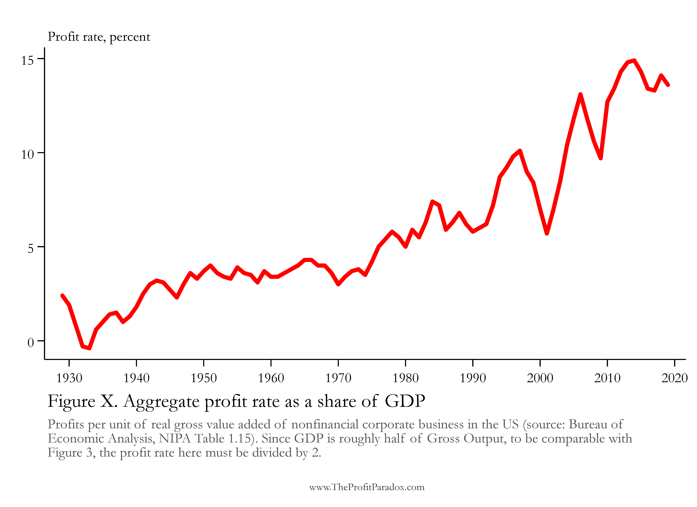
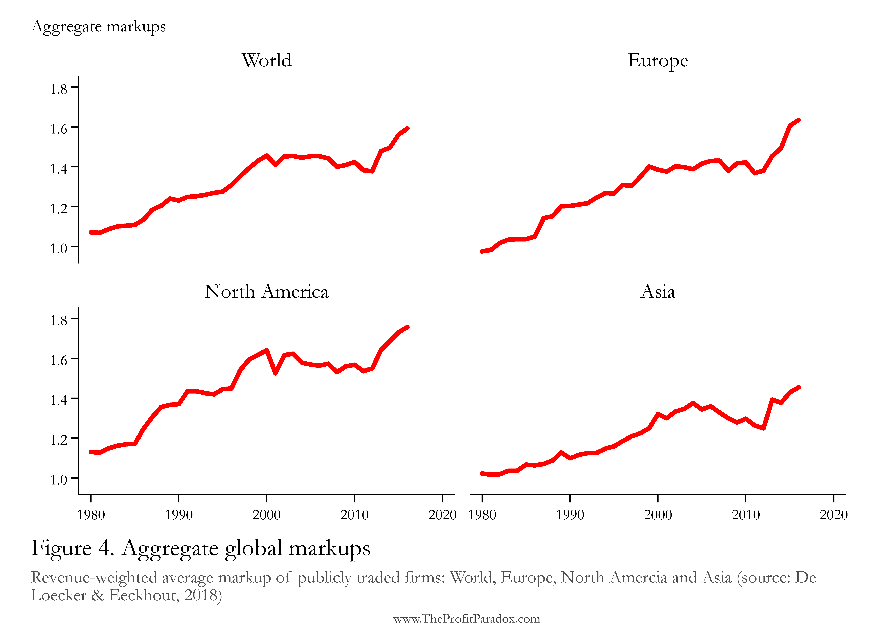
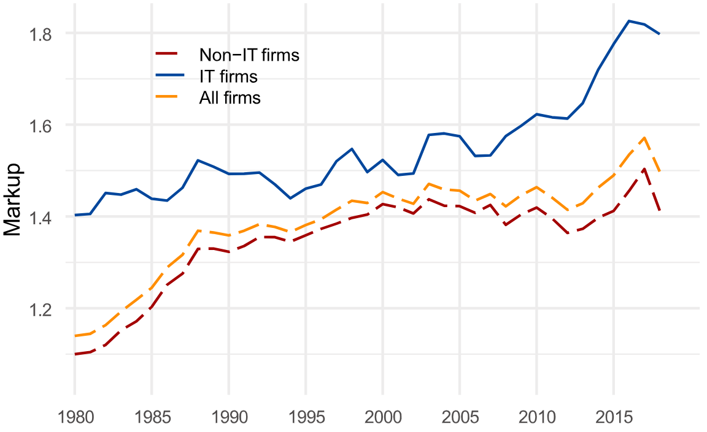

Choices, Inequality and Welfare
University Minor Economics
2025-11-17
7 Market Structure and Market Power
7.1 Profit Maximization and Market Structure
Profit Maximization
- goal of any firm is to make money and maximize profit through choosing its output level \(q\) \[\max_q \Pi(q) = R(q) - C(q).\]
- non-negativity requirement: \[\Pi(q) \ge 0.\]
- \(\Pi(q) < 0\) (loss) triggers firm exit
- demand as constraint \[q \le D(p).\]
- technology (production function) as constraint (coming in via the cost-of-output function \(C(q)\))
- first order condition \[MR(q)-MC(q)=0\]
- implicitly determines optimal level of \(q\) that the firm wants to supply
- \(MR(q)\) differs across market structures
- consider:
- competitive firm
- standard monopoly
- perfectly price-discriminating monopoly
- natural monopoly
- duopoly competing in quantities
- duopoly competing in prices
7.2 Competitive Firm
Competitive Firm
- for competitive (atomistic) firm, market price is a given
- \(MR(q)=p\)
- firm can supply infinitely much output (essentially demand curve is entirely flat / infinitely price elastic)
- from \(MR(q)-MC(q)=0\) follows \(p=MC(q)\)$
- \(\to\)adjust output choice such that marginal cost equals the given price
- also note \[ p\cdot q - C(q)\ge 0 \quad \Longrightarrow \quad p\ge \frac{C(q)}{q} = AC(q), \] price must cover average cost and firm must at least break even (make zero profit)
- at any given \(p\), can determine the output choice \(q\) from \(p=MC(q)\) and \(p \ge AC(q)\)
- this gives supply function \(q=S(p)\)
- supply starts in the minimum of \(AC\) and then follows \(MC\)
7.3 Monopoly
Standard Monopoly
- demand constraint is relevant, firm faces entire market
- \(MR\) is ‘twice as steep as demand’
- there is a single point of supply (determined through \(MC(Q^\star)=MR(Q^\star)\))
- at that \(Q^\star\), choose \(P^\star\) such that \(Q^\star=D(P^\star)\)
- this is a rational equilibrium choice since the firm cannot appropriate the full marginal revenue: if it cannot discriminate between customers according to their willingess to pay, the firm loses revenue on the inframarginal units
- main issue of monopoly is that it produces too little
- root of deadweight loss of monopoly
profit maximization \[\max_Q \Pi(Q) = R(Q) - C(Q)\] requires \(MR(Q)=MC(Q)\)
Suppose, \(MC(Q)=c\) and \(Q = D(p) = a-p\), then \(R(Q) = p\cdot Q=(a-Q) \cdot Q\) \[ MR(Q) = \frac{\mathrm{d}}{\mathrm{d}q} R(Q) = (-1)\cdot Q + (a-Q)\cdot 1 = a-2Q \stackrel{MC}{=}c. \]
Thus, equilibrium quantity, price, and markup \[Q^m = \frac{a-c}{2}, \qquad p^m = \frac{a+c}{2} > c, \qquad \text{relative markup} = \frac{p^m-c}{p^m}>0\]
- the relative markup is also known as Lerner Index and is a popular measure of market power \[LI = \frac{p-c}{p}\]
- compare: a competitive firm produces where price equals marginal cost (here: \(p=c\)), such that \(LI=0\)
- the more a firm can raise its sales price above the cost of producing the last (typically most costly) unit of output, the more market power it has
- also note: it is easy to show that \[LI = -\frac{1}{\eta^D_p}\] where \(\eta^D_p\) denotes the price elasticity of demand (typically, \(\eta^D_p\le 0\))
Monopolization: Implications, Issues & Instruments


- further implication: monopolization may also restrain worker wages
source: Eeckhout (2021, Profit Paradox)
- is the monopoly stable?
- high profits attract entry
- a cartel-monopoly might break down
- can we change the welfare loss, keeping the monopoly?
- first degree price-discrimination: producer surplus \(\equiv\) total surplus
- can we get rid of the monopoly and introduce competition?
- it may be protected by law and policy (e.g. patents)
- there may be technological reasons (natural monopoly)
- there may be interactions with demand-side (platforms)
- there may be barriers to entry erected by the monopoly
- need: entry or threat of entry (competition) and absence of collusion
- competition policy (antitrust)
- price-fixing cartels and collusion are forbidden
- instruments: fines and/or leniency programs (reward whistleblowing cartel members to increase detection probability)
- competition policy (antitrust)
- many monopolies are created and protected by gov’t (patents, import tariffs, etc.)
- marginal cost price regulation is possible, but regulator needs to know marginal cost
- natural monopoly: marginal cost pricing not possible
Cartel Monopoly
Instability of cartels: difficulty of joining forces to behave as monopoly

- 2 firms in a cartel: collude or break cartel (‘deviate’ from collusion)
- cartel collusion realizes monopoly profits that can be shared
- cartel collusion realizes monopoly profits that can be shared
- ‘deviate’ is dominant strategy for both
- monopoly breaks down
- coordination would have led to higher profits
- compare Prisoner’s dilemma, public goods
First-Degree Price Discrimination
- monopolist that needs to charge a single price for all units sold suffers a loss on revenue when increasing production
- if each unit can be sold at a different price, the monopolist can fully exploit this and appropriate all the surplus
- the firm will do this, since the penalty of having to reduce the price for inframarginal units, as is the case for the standard monopoly, does not apply
- \(\to MR\) coincides with demand schedule
- quantity sold equals that of competitive market
- there is no welfare loss
profit maximization \[\max_Q \Pi(Q) = R(Q) - C(Q)\] requires \(MR(Q)=MC(Q)\)
Suppose, \(MC(Q)=c\) and \(Q = D(p) = a-p\), then \(MR(Q) = a-Q\)
Thus, equilibrium quantity \[Q^m = a-c\] and individual prices in the range \(p^m \in [c, a]\)
Lerner index then can be calculated from an average over \(\displaystyle \left[0, 1-\frac{c}{a}\right]\)
- modern firms get to know and track their customers (online technology: webshop accounts, cookies, search and purchase history)
- they try to estimate the demand elasticity of individual customers or demographic groups
- and differentiate the prices between them (personalized pricing)
- possibly indirectly (discounts, vouchers, loyalty points, special offers)
- our model of perfect price discrimination shows an extreme trade-off between equity and efficiency
Natural Monopoly
- large fixed cost of production make it costly or even prohibitively expensive to enter a market
- examples: phyiscal network infrastructure such as rail, pipelines, cables
- average cost curve is downward sloping
- viable competition cannot be established
- best you can do: keep just one firm
- call for (price) regulation
- illustration: subadditivity
- it is cheaper to produce a quantity of \(2Q_0\) in just 1 firm than splitting it equally into 2 firms
- effect relevant when large fixed cost and constant marginal cost
- even under increasing marginal cost, if demand cuts AC in downward-sloping part
- the calculus of the natural monopoly is the same as for the standard monopoly: \(MR=MC\) implies too small a quantity
- subadditivity implies that competition cannot and should not be introduced
- regulator can set a regulatory price \(p_{reg}\) but not below AC, else firm leaves due to losses
- second-best regulation: minimize the deadweight loss of monopoly subject to the firm making zero profit (Ramsey pricing)
Dynamics
Monopolies are strictly welfare-reducing
- Paretian Welfare
- Social Welfare: supernormal profits contribute to inequality
We know this from our static model of the Standard Monopoly.
Monopolization may have contributed to the secular rise in inequality (Piketty)
Monopolies innovate less.
Schumpeter: process of Creative Destruction
- innovative entrepreneurial firms that are able to disrupt incumbents’ way of doing things, may be lucky enough to enter existing markets, or create new markets
- if successful, a monopoly position will be won
- others will copy the innovator, trying to replicate, and compete, consumers adopt, and prices fall
- profits shrink \(\to\) back to step 1
- monopolies as (fleeting) side effect of innovative activity, the possibility for future monopoly rents creates strong incentives for innovation and invention now
Does the Schumpeterian view still apply in the information age?
- monopoly profits are shielded by a complex patent system, making entry and competition difficult
- big tech monopolies arose in a very short time, and due to network effects became self-enforcing and uncontestable
- at the root of both is the nature of information
- in addition: widespread cartelization of many industries, despite inherent instability
Platform Industries
- enormous growth of so-called two-sided markets, in which #users on one side (e.g., buyers) depends on #users on the other side (sellers)
- platforms sometimes sit in between the two sides of the market as intermediaries
- importance of communication technology and big data (e.g., phone apps)
- tendency to concentration/monopolization in IT industry
- Alphabet, Amazon, Apple, Meta, Microsoft
- root cause: network externalities

source: van ’t Klooster & Teulings (2023, EcInnovNT)
- many markets depend on the intermediation of a platform
- platforms are networks connecting many buyers and sellers
- platforms can be physical locations, but often are internet-based
- the platform sits between buyers and sellers and connects them, allocates resources, or transmits information
- buyers and sellers may be directly connected as well
| side 1 | platform | side 2 | ||
|---|---|---|---|---|
| consumers | \(\leftrightarrow\) | credit card companies | \(\leftrightarrow\) | merchants |
| students | \(\leftrightarrow\) | Wikipedia.org | \(\leftrightarrow\) | contributors |
| travelers | \(\leftrightarrow\) | Uber.com | \(\leftrightarrow\) | drivers |
| diners | \(\leftrightarrow\) | Takeaway.com | \(\leftrightarrow\) | restaurants |
- positive direct network effects: network gets more useful as #users increases
- Microsoft Office: everybody uses it because everybody else uses it and documents can be shared
- network may also become more useful with more users on the other side
- positive indirect network effects: bundling with third-party suppliers makes network more useful
- Microsoft Windows Phone: shrinking share of users \(\to\) shrinking supply of Windows-Apps \(\to\) shrinking share of users
- positive indirect network effects: bundling with third-party suppliers makes network more useful
- usage grows after a critical mass has been attained, possibly on both sides
- chicken-and-egg problem
- example: Takeaway.com: diners only use the platform when there is a choice among many restaurants; restaurants only use it when they can reach enough many consumers
- task is to jumpstart the positive feedback process
- too small and not fast enough growing networks die soon because of lacking interest, a single successful platform may survive
- data services: economies of scale compounded by network externalities
- economies of scale may become permanently appropriated by the winning firm, locking in users
7.4 Duopoly
Cournot Duopoly: Quantity Competition
- 2 firms (\(A\), \(B\)) in the market, constant MC, no fixed cost, both produce the same, identical good
- consumers are indifferent to buying at \(A\) or \(B\)
- if firms each choose their quantity, they will take into account that
- the other firm makes choices (so \(A\) reacts to \(B\), as in a game with Nash equilibrium strategies)
- the price falls if they together produce more (falling demand schedule)
- suppose, market demand \(Q = q_A + q_B = 1-p\)
- marginal cost \(\mathit{MC}_A=\mathit{MC}_B = 0.4\)
- demand for firm \(A\): \[p_A(q_A, q_B) = 1 - q_A - q_B\]
- marginal revenue (‘twice as steep’ as demand) equal to MC (profit max condition) \(\mathit{MR}_A = 1 - 2 q_A - q_B = \mathit{MC}_A\)
- reaction function: \(\displaystyle 1 - 2 q_A - q_B = 0.4 \qquad \to \qquad q_A = \frac{1}{2}(0.6 - q_B)\)
- similar for \(B\), and solve [\(q_A\) as function of \(q_B\), etc.] \[q_A(q_B) = \frac{1}{2} ({0.6 - q_B})\quad \text{and} \quad q_B(q_A) = \frac{1}{2} ({0.6 - q_A})\]
- equilibrium: \(q_A = q_A (q_B) = q_A (q_B (q_A))\) \[q_A = \frac{1}{2} \left[{0.6 - \frac{1}{2} ({0.6 - q_A})} \right]\]
- final solution for eq. quantities \[q_A^d = 0.2 \quad \text{and} \quad q_B^d = 0.2\]
- identical firms have identical market shares & profits
- (ttl) market quantity, \(\displaystyle Q^d = 0.4\)
- market price, \(\displaystyle p^d = 0.6 > MC_i = 0.4,\; i=A,B\)
- profits, \(\Pi_i = 0.04,\; i=A,B\)
- (ttl) market quantity, \(\displaystyle Q^d = 0.4\)
- reaction function (aka best response curve) is the optimal quantity decision of a firm given the competitor’s quantity (blue & red)
- Nash equilibrium is where both reaction functions cross, or where best reponses are mutually compatible
- equilibrium will react to, among others, changes in marginal cost
- quantities are so-called strategic substitutes (\(A\) responds to \(B\)’s quantity change in the opposite direction), reaction functions slope downwards
In class, we link reaction functions & isoprofit curves
- symmetric Cournot oligopoly with \(N_f\) firms
- simple extension of the \(N_f=2\) duopoly case
- nests as special cases: \[\text{standard monopoly} \quad \text{when} \quad N_f=1\] and \[\text{perfect competition} \quad \text{when} \quad N_f\to \infty.\]
- total profit and markups \(\downarrow\) and total quantity \(\uparrow\) as \(N_f\uparrow\)
Bertrand Duopoly: Price Competition
What, if firms use price as strategic variable instead of quantity?
- Bertrand Duopoly
- 2 firms, \(A\) and \(B\), compete in prices
- homogeneous good, fully transparent, no transaction costs, constant MC, no fixed cost
- consumers always buy from the cheapest firm
- firm with higher price sells nothing
- only if both choose same price, they share the market
- best response: undercut the competitor to get the entire market
- if competitor \(B\) chooses price higher than monopoly price, it prices itself out of the market, and \(A\) can set the monopoly price itself
- equilibrium: race to the bottom (marginal cost)
- prices are so-called strategic complements (\(A\) responds to \(B\)’s price change in the same direction), reaction functions (blue & red) slope upwards
- shift marginal cost away from zero to see effect on equilibrium B
- paradoxical result shows: competitive marginal cost pricing possible with as little as \(N_f=2\) firms
- effect of undercutting stops where the first firm leaves the market (makes negative profit)
- for two firms with identical marginal costs (symmetry), find that lower bound is \(p=c\) where \(c\) applies to both firms
- for two firms with heterogeneous marginal costs (asymmetry), the highest marginal cost stop the process of undercutting
- equilibrium price = \(\max(c_A, c_B)\), and low-cost firm making profit
- assuming that the low-cost firm does not further reduce its price by a small amount to force the high cost firm out of the market
Conclusions
Summary Market Structure
- perfect competition is welfare maximizing (Pareto efficient), price equals marginal cost
- standard monopoly maximizes profits such that price \(>\) marginal cost; the difference (mark-up) goes to the firm, and the consumer buys less
- policy response: kindle competition, encourage free entry
- perfectly price-discriminating monopoly has no welfare loss, but creams off the entire surplus
- policy response: depends on whether inequality is an issue (if so: kindle competition)
- natural monopoly will not have entrants (even if no other barriers to entry)
- policy response: regulation
- policy response: regulation
- network externalities (compounded in platform or two-sided markets) lead to rapid monopolization esp. of digital industries, and may contribute to inequality
- Cournot duopoly outcome is in between competition and monopoly (in terms of price, welfare and quantity)
- Bertrand replicates perfect competition with just 2 firms

University Minor Economics • Choices, Inequality and Welfare • Stefan Hochguertel